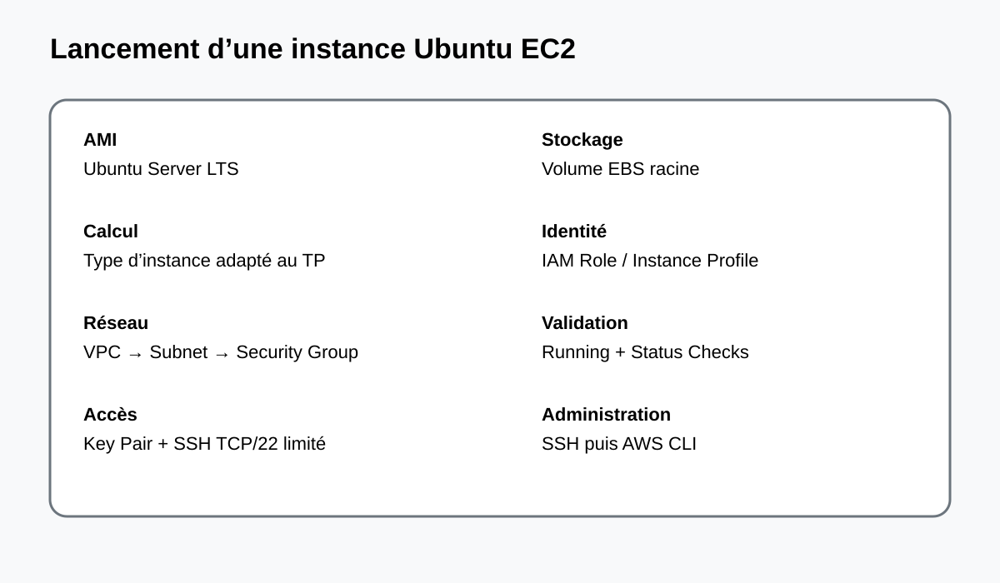

Ce travail pratique a pour objectif de mettre en œuvre un serveur Web Linux dans le cloud AWS à l'aide du service Amazon EC2. L'environnement retenu est Amazon Linux 2023, distribution d'AWS adaptée aux instances EC2.
À l'issue de la réalisation, l'étudiant doit être capable de :
lancer et administrer une instance EC2 Linux ;
configurer un Security Group pour SSH, HTTP et éventuellement HTTPS ;
installer et gérer Apache (httpd) ;
déployer une page Web statique ;
vérifier le service avec systemctl, curl et un navigateur ;
diagnostiquer les principales causes d'une indisponibilité Web ;
appliquer le principe du moindre privilège et réduire la surface d'exposition.
Résultat attendu : une instance EC2 Linux accessible en SSH depuis une adresse autorisée et un serveur HTTP accessible sur le port 80.
2. Prérequis
Compte AWS actif et région sélectionnée.
Paire de clés EC2 pour l'administration SSH.
Ordinateur disposant d'un client SSH et d'un navigateur Web.
Possibilité de créer une instance avec une AMI Amazon Linux 2023.
Adresse IP publique ou DNS public si l'accès Web direct est requis.
Protection de la clé privée
chmod 400 mon-keypair.pem
ssh -V
Important : la clé privée .pem ne doit jamais être commitée dans Git ni transmise à un tiers.
3. Concepts et architecture
Composant
Rôle
EC2
Machine virtuelle exécutant Linux et le serveur Web.
AMI
Image utilisée pour initialiser le système.
VPC / Subnet
Infrastructure réseau de l'instance.
Internet Gateway
Connectivité Internet d'un subnet public correctement routé.
Security Group
Pare-feu réseau virtuel associé à l'instance.
EBS
Stockage persistant.
httpd
Serveur HTTP Apache.
Architecture logique
Utilisateur / Navigateur
|
| HTTP : TCP/80
v
Internet Gateway
|
v
VPC → Subnet public → Security Group
|
v
EC2 Amazon Linux 2023
|
v
Apache (httpd)
|
v
/var/www/html/index.html
En production, on privilégiera généralement HTTPS, un Application Load Balancer, des subnets privés pour les serveurs applicatifs et des mécanismes de supervision et d'automatisation.
4. Installation et configuration
4.1 Création de l'instance EC2
Ouvrir EC2 dans la console AWS.
Choisir Launch instance.
Nom : webserver-linux.
AMI : Amazon Linux 2023.
Choisir une taille adaptée au TP selon les conditions tarifaires du compte et de la région.
Sélectionner une paire de clés.
Choisir un subnet public et une route vers une Internet Gateway si l'accès Internet direct est nécessaire.
Associer un Security Group avec SSH limité à l'IP d'administration et HTTP pour le site public.
Lancer l'instance.

4.2 Règles Security Group
Protocole
Port
Source
Usage
TCP
22
Mon IP / CIDR d'administration
SSH
TCP
80
0.0.0.0/0
HTTP public
TCP
443
0.0.0.0/0
HTTPS si TLS est configuré
Règle de sécurité : éviter d'ouvrir le port 22 à 0.0.0.0/0.
5. Réalisation pratique
5.1 Connexion SSH
ssh -i "mon-keypair.pem" ec2-user@<PUBLIC_IP>
Identifier le système :
cat /etc/os-release
uname -a
hostnamectl
5.2 Mise à jour
sudo dnf update -y
Amazon Linux 2023 utilise dnf pour la gestion des paquets.
Identifier puis corriger la directive ou l'application fautive.
Mauvaise page
Fichier index et répertoire document root.
Vérifier /var/www/html/index.html.
Valider la configuration Apache
sudo apachectl configtest
Le résultat attendu est Syntax OK.
9. Sécurité et bonnes pratiques
SSH : limiter TCP/22 aux réseaux d'administration connus.
IAM : utiliser le moindre privilège et des rôles IAM lorsque cela est possible.
Secrets : ne jamais stocker clé privée, mot de passe ou secret dans Git.
Mises à jour : appliquer régulièrement les correctifs de sécurité.
HTTPS : utiliser TLS en production.
Logs : surveiller les journaux Apache et envisager CloudWatch.
Sauvegardes : mettre en place une stratégie adaptée aux données.
Exposition : ne pas exposer directement les bases de données à Internet.
Production : préférer une architecture hautement disponible avec Load Balancer et instances privées lorsque le besoin le justifie.
Attention : le Security Group ne remplace pas le durcissement du système, la gestion IAM, le chiffrement et la supervision.
10. Checklist
[ ] AMI Amazon Linux 2023 sélectionnée
[ ] Paire de clés créée et protégée
[ ] Instance EC2 à l'état running
[ ] Subnet public et routage Internet configurés si nécessaire
[ ] SSH 22 limité à l'administration
[ ] HTTP 80 autorisé pour le site
[ ] Connexion SSH réussie
[ ] Système mis à jour avec dnf
[ ] Apache installé
[ ] httpd actif et activé au démarrage
[ ] Page /var/www/html/index.html déployée
[ ] Test curl localhost réussi
[ ] Test HTTP externe réussi
[ ] Journaux vérifiés
[ ] Sécurité et coûts contrôlés
[ ] Ressources inutilisées arrêtées ou supprimées après le TP
11. Conclusion
Ce travail pratique a permis de mettre en œuvre un serveur Web Linux sur AWS EC2 à partir d'Amazon Linux 2023. La démarche a couvert la création de l'instance, la configuration réseau, l'administration SSH, l'installation d'Apache, le déploiement d'une page Web et la validation du service.
Les tests locaux et externes permettent de distinguer les problèmes applicatifs des problèmes réseau. Les Security Groups, systemd, les journaux Apache et les outils réseau constituent une base efficace de diagnostic.
Pour une mise en production, l'architecture devra être renforcée par HTTPS/TLS, une gestion IAM rigoureuse, une supervision centralisée, des sauvegardes, une stratégie de haute disponibilité et, selon les besoins, un Application Load Balancer et des instances privées.